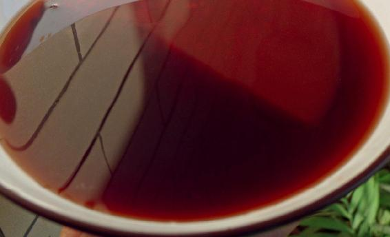
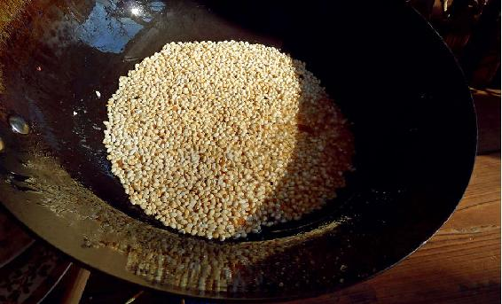
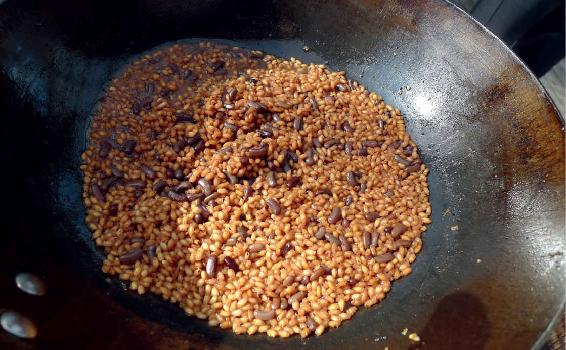
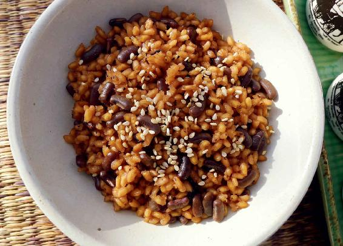
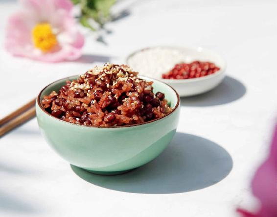

这要看情况，如果您喝了腊八粥以后觉得身体很舒服，可以一直喝到春节之前。
如果您早上喝了腊八粥，到了中午就可以食用小寒节气的食补方——糯米红豆饭。
脾胃比较虚弱的人，或是容易积食的小孩子、老年人，腊八粥和糯米红豆饭选一样来吃就可以了。
糯米红豆饭和腊八粥在原料上是有一点重合的，两个食方的主料都是糯米和红豆。可不可以用腊八粥来代替糯米红豆饭呢？是可以的，如果长时间吃，腊八粥里不要放太多糯米和黏腻难消化的配料。
糯米红豆饭跟腊八粥的基础配料是一样的，可是做法不一样。它比直接吃糯米要好消化多了，适合吃糯米过多就觉得不舒服的朋友。
糯米跟其他的粮食不一样，它是固肾气的，可以说是米类中最补的，此外，糯米还能补脾、补肺、补虚寒。
对于糯米红豆饭的做法，有一些朋友觉得匪夷所思，但尝试之后都觉得很香、很好吃，所以您不妨尝试一下。
糯米红豆饭
原料：红小豆2两（100克），糯米2两（100克），动物油、盐、芝麻各少许。

做法：
1.把红小豆先用清水泡一下，下锅煮开，10分钟后关火（不需要煮到熟透或煮烂）。

2.炒锅里多放一些油，烧热以后，再放一点点盐，然后把生糯米直接下锅，用小火不停翻炒（这个步骤很关键）。

3.炒到糯米微微有些发黄，散发出炒香的味道时，就可以把红豆连汤一起倒进去，盖上锅盖，用小火焖熟后就可以起锅了。

4.炒锅里不要放油，放一点点芝麻炒香。在炒的过程中，要用铲子快速搅动，不然芝麻就煳了，炒个10多秒钟就可以了。把炒好的芝麻撒在糯米红豆饭上，一碗香喷喷的糯米红豆饭就做好了。

允斌叮嘱：
1.红小豆可以用红饭豆或赤小豆代替，动物油可以用猪油或者黄油，如果您是吃素的朋友，也可以用花生油来代替。
2.糯米不要用水泡或用水煮，就把生的干糯米直接放到锅里用油炒。在炒的过程中，糯米中的淀粉会变性，这样焖好的糯米饭一点都不黏腻，吃起来跟普通的米饭一样，而且变得比较容易消化，很适合脾胃虚弱、吃糯米难受的人。
3.糯米炒得有点煳了，您也不用担心。因为炒过的糯米，补肾的效果还在。炒煳的淀粉会形成煳化层，能给胃增添动力，帮助消化。
4.有的朋友觉得这个饭很香，就是稍微有一点点硬，要慢慢地嚼。其实，糯米红豆饭的软硬跟红豆汤的水量多少有关系。如果您喜欢吃得硬一点儿，就少放一点水煮红豆；如果您喜欢吃得软一点儿，就多放一点水煮红豆。
5.有些老年人牙口不好，做糯米红豆饭时，可以先用水把糯米泡上，然后沥干了水分再炒。泡过的糯米，一定要把水分沥干，不然在炒糯米的过程中，油会不断地溅起来，而且糯米还很容易粘连。您必须不断地快速翻炒，这样糯米表面的水分才能被炒干，粒粒分明，不会煳锅。
读者评论：小寒节气吃了糯米红豆饭，不起夜了
窗下的风铃72205：小寒节气吃了糯米红豆饭，不起夜了。
森之阳：每天下午肚子都会胀气，很难受。自从吃了糯米红豆饭，这种情况就好了很多，谢谢陈老师带来这样实用的食方，爱您。
燕子_lep：糯米红豆饭非常香，平时不爱吃饭的孩子都喜欢吃，非常感谢允斌老师的分享！
惠子Chelsea：我和妈妈都是陈老师的忠实粉丝。今天煮了糯米红豆饭，猪油是自己熬的，也太好吃了。疫情打乱了生活，打不乱节气和时间，谢谢老师教给我们的生活方式，让平淡的日子多了一种仪式感。
漂亮妈妈（吴海垠）：糯米红豆饭，我家已经吃了两年了。我家在东北，孩子吃了糯米红豆饭去上班，回来对我说，好像真的不那么冷了！让一个正在减肥的人接受糯米饭真的很不容易！关键是糯米红豆饭真的很好吃！
海阔天空：糯米红豆饭已吃了两年了，真的很少感冒了。
罗怡：糯米红豆饭真的很好吃，而且又养生，太感谢陈老师了！
燕子呢喃：糯米红豆饭太香了，吃了以后皮肤变得滋润了。能跟着陈老师顺时生活真好！
玲姐：今天吃糯米红豆饭了，很好吃，胃暖暖的。
允斌解惑：糯米红豆饭里的糯米可以一次多炒几顿的量吗？
皇后芙蓉：我做糯米红豆饭的时候加入了一些瘦肉，这样做祛湿效果会不会打折扣？
允斌：加肉的话，放陈皮就能解腻化湿。
岭吉他：要用圆圆的红豆还是长的赤小豆呢？还是二者皆可？
允斌：用赤小豆祛湿效果更好。
黄春疆：糯米红豆饭里的糯米可以一次炒几顿的量吗？这样我就不用每天都炒了。
允斌：可以的。